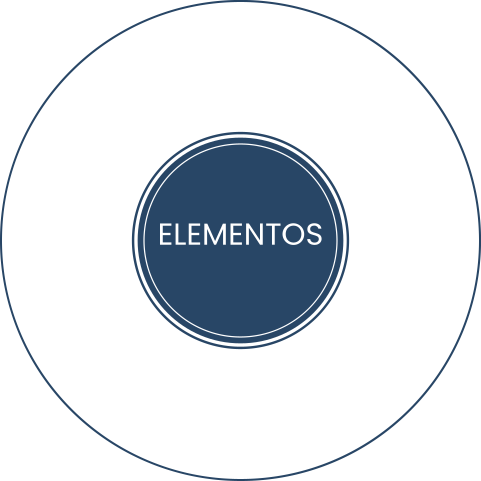

TÓPICO 3
O PAPEL DO GESTOR DA APS PARA APLICAÇÃO DE ESTRATÉGIAS DE PREVENÇÃO E PROMOÇÃO DA SAÚDE DE SEU TRABALHADOR
TÓPICO 3
O PAPEL DO GESTOR DA APS PARA APLICAÇÃO DE ESTRATÉGIAS DE PREVENÇÃO E PROMOÇÃO DA SAÚDE DE SEU TRABALHADOR

Inserido na Política Integrada de Atenção à Saúde do Servidor Público do Distrito Federal, é de responsabilidade da SubSaúde, objetivando a antecipação, o reconhecimento, a avaliação e o controle de possíveis riscos ambientais existentes ou que venham a existir nos ambientes de trabalho. Segue as diretrizes da Norma Regulamentadora 9 – Programa de Prevenção de Riscos Ambientais, do Ministério do Trabalho e Previdência.
O objetivo do PPRA é sumarizar e documentar o conjunto de ações relativas ao gerenciamento dos riscos ambientais inerentes ao processo produtivo, fornecendo parâmetros legais e técnicos e considerando a proteção dos servidores em relação ao meio ambiente laboral e aos recursos naturais empregados (DISTRITO FEDERAL, 2012).
ESTRUTURA DO PPRA
1
Planejamento anual com informações sobre metas, prioridades e cronogramas.
2
Estratégia e metodologia de ação.
3
Forma de registro, manutenção e divulgação dos dados.
4
Periodicidade e forma de avaliação do desenvolvimento do programa.